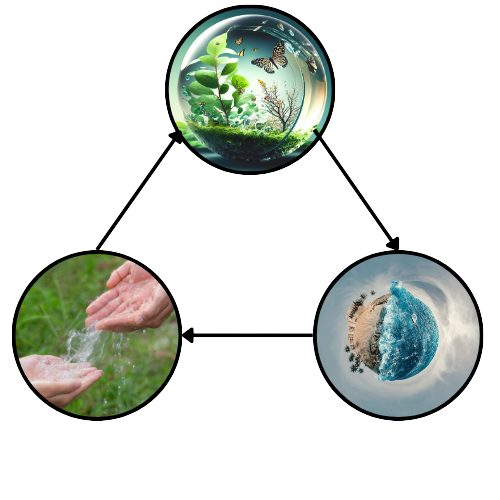

Embrace the Movement, Safeguarding Earth for an Epic Future!
Step into the epic world of VONG and join the movement dedicated to safeguarding our planet for an extraordinary future. Together, we can make a lasting impact and create a sustainable world worth celebrating.
